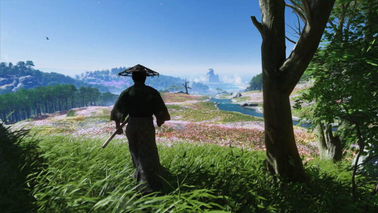
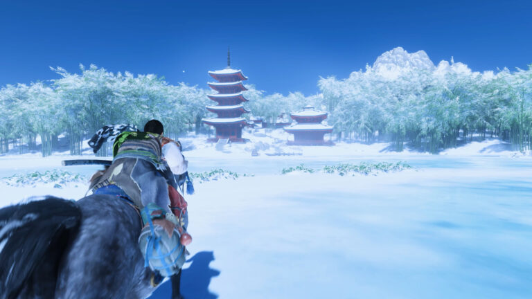
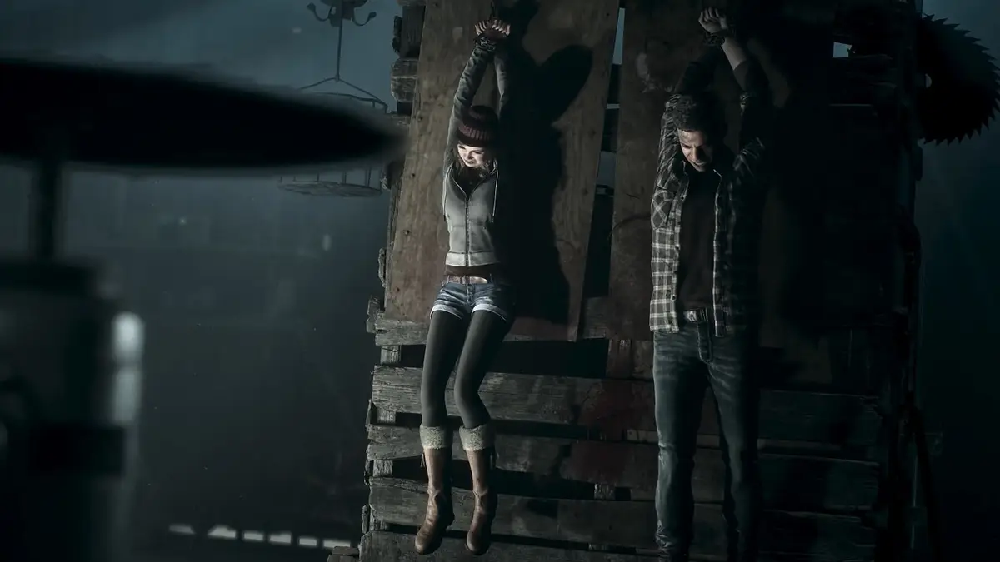

|  |  |  |
Yönetmenin Sürümü’yle Jin Sakai’nin serüvenine PC’de ilk defa eşlik edin ve Ghost of Tsushima – Tsuşima’nın Hayaleti tecrübesini eksiksiz deneyimleyin. 13. yüzyılın sonlarında Moğol imparatorluğu, Doğu fethi boyunca ulusların altını üstüne getirdi. Tsuşima Adası, ana kara Japonya ve amansız komutan Hotun Han’ın önderliğindeki dev Moğol donanmasının arasında duran yegâne şeydi. Ada, Moğol taarruzunun ilk dalgasıyla yangın yerine dönerken yürekli samuray Jin Sakai, klanının hayatta kalan son üyesi olarak halkını korumak ve yurdunu geri almak için ne gerekiyorsa yapmaya hazır. Bugüne dek savaşta ona yol göstermiş samuray töresini bir kenara atıp kendine yeni bir yol, Hayalet’in Yolu’nu çizmeli ve Tsuşima’nın özgürlüğü için görüşmemiş bir kurtuluş mücadelesi başlatmalı. Ghost of Tsushima – Tsuşima’nın Hayaleti’ni açılmış kare oranı ve son model PC’lerden taşınabilir PC oyun cihazlarına kadar geniş bir skalaya uygun tasarlanmış çeşitli grafik seçenekleriyle tecrübe edin.
Tür: Oyun, Açık Dünya Oyunları, Aksiyon, Macera, Türkçe Oyunlar, Yıldız Oyunlar
Platform: PC
Boyut: 68 GB
Crack: v1053.6.0712.1625
Tarih: 16 Mayıs 2024
Dil: Türkçe
|  |
Oyuna Genel Bakış Sekiz arkadaş, bir yıl önce aralarından iki kişinin kaybolduğu izbe mekâna döner ve korkunun kan dondurucu pençesine düşer. Dağ tatilleri, kaçışı olmayan bir kâbusa dönüşecektir. PC için yeniden düzenlenmiş bu etkileyici korku klasiği Until Dawn’da korkularınızla yüzleşip şafağa değin kimin sağ kalacağını belirleyin. Kült korku yeniden Unreal Engine 5’te çarpıcı görsellerle baştan sonra yeniden tasarlanmış bu sürükleyici korku hikâyesinde kaybolun. Film gibi sinematografi, rafine oynanış mekanikleri ve dahasıyla güçlendirilmiş bu oyunun gözlerden uzak, hiçbir şeyin göründüğü gibi olmadığı dağ ortamında heyecan dolu bir keşfe çıkın.
Tür: Aksiyon, Macera, Oyun, Türkçe Oyunlar, Yıldız Oyunlar
Platform: PC
Boyut: 59 GB
Crack: P2P
Tarih: 4 Ekim 2024
Dil: Türkçe
Cal Kestis’in hikayesi, Respawn Entertainment’ın Lucasfilm Games ile iş birliğiyle geliştirdiği, tüm galaksiyi kapsayan üçüncü şahıs aksiyon macera oyunu Star Wars Jedi: Survivor™’da devam ediyor. Bu anlatım odaklı tek oyunculu oyun, Star Wars Jedi: Fallen Order™’daki olaylardan 5 yıl sonra başlıyor ve galaksiye iyice karanlık çökerken Cal’in umudunu giderek yitirdiği savaşı takip ediyor. İmparatorluk tarafından galaksinin dışına itilen Cal’in etrafında yeni ve tanıdık tehlikeler olacak. Hayatta kalan son Jedi Şövalyelerinden biri olan Cal, galaksinin en karanlık zamanlarında direnmek zorunda. Acaba kendisini, mürettebatını ve Jedi Düzeni’nin mirasını korumak için sınırları ne kadar zorlayacak?
Tür: Oyun, Açık Dünya Oyunları, Aksiyon, Macera, Yıldız Oyunlar
Platform: PC
Boyut: 130 GB
Crack: RUNE
Tarih: 28 Nisan 2023
Dil: İngilizce
 |
Ajan 70 ile dünyanın dengesini bozan anomalileri durdur! Özel anomali silahlarını kullanarak rakiplerini oradan oraya fırlat! İster yakın dövüş teknikleriyle ister ateşli silahlarla onların üstesinden gel! Karakterini farklı tarzlarda geliştirerek oynanışını değiştir. Seni kovalayan düşmanlardan akrobatik hareketlerle kaç. Olayların gidişatına yön ver. Hikâyedeki gizemleri çöz ve dünyayı güvenli hale getir… ya da felakete sürükle. Seçim senin. Akılda kalıcı karakterleri, özel Anomaly Boss’ları, sürprizler barındıran hikâyesi ve akıcı oynanışıyla sevmeni umduğumuz bir oyun geliştirdiğimize inanıyoruz. Umarız oynadığın süre boyunca keyif alırsın.
Tür: Oyun, Açık Dünya Oyunları, Aksiyon, Macera, Türkçe Oyunlar, Yıldız
Oyunlar
Platform: PC
Boyut: 385 MB
Crack: GOLDBERG
Tarih: 24 Ocak 2024
Dil: Türkçe
Şirketinizi genişletmek ve Batı Balkanlar’ın güzelliklerini keşfetmek için hazır mısınız? Arnavutluk, Bosna-Hersek, Hırvatistan, Karadağ, Kosova, Kuzey Makedonya, Sırbistan ve Slovenya’ya doğru bir yolculuğa çıkın!
Tür: Açık Dünya Oyunları, Ek Paketler, Oyun, Simulasyon, Türkçe Oyunlar
Platform: PC
Boyut: 20.8 GB
Crack: v1.1.242.185
Tarih: 19 Ekim 2023
Dil: Türkçe
| 1 | 2 | 3 | 4 |
2024 yılı Ekim ayında, oyun satışları %3 oranında bir artış gösterdi. Bu artış özellikle PC ve konsol oyunlarında belirgin olurken, mobil oyunlar önceki aylara kıyasla düşüş gösterdi. Bu artışın ardındaki nedenler arasında popüler oyunların yeni sürümlerinin çıkışı, tatil sezonuna hazırlık ve büyük çaplı oyun etkinliklerinin etkisi önemli olmuştur. Konsol ve PC oyunlarının yüksek satış performansı, güçlü içerik güncellemeleri ve geniş çaplı pazarlama kampanyaları gibi faktörlerde satışı artıran etkenler arasında sayılabilir...
Haberin devamı için tıklayın.Rockstar Store, Epic Games ve Steam üzerinden oluşturulabilecek ön siparişlerin ne zaman başlayacağı önümüzdeki günlerde belli olacak. Red Dead Redemption ve ek paketi Undead Nightmare için PC sistem gereksinimlerini aşağıdaki tabloda inceleyebilirsiniz...
Haberin devamı için tıklayın.GeForce NOW powered by GAME+, NVIDIA’nın bulut tabanlı oyun stream hizmetidir ve doğrudan bulut üzerinden cihazına gerçek zamanlı oyun deneyimi sunar. Desteklenen oyunlar için bulut kayıtlarıyla, nerede olursan ol, oyununu kaldığın yerden, desteklenen herhangi bir cihazda devam ettirebilirsiniz ve GAME+ ayrıcalığı ile Türkiye'ye özel GeForce NOW sunucularından ulaşabilirsiniz. Yeni başlayanlar için oynaması ücretsiz bir planı da bulunuyor. Kütüphane de bulunan ücretsiz oyunları oynayabilir ve Steam, Epic Games Store’da kendi hesabınızdaki oyunlarınıza bulut erişimi sağlayabilirsiniz. Bazı stüdyolar oyunlarını Geforce Now kullanımına kapatmış olsalar da yinede oynayabileceğiniz binlerce oyun var. GeForce Now’ı ücretsiz olarak kullanmak mümkün ancak bazı kısıtlamalar mevcut. Sisteme yoğun talep olduğunda sıra beklemenin yanı sıra seansların bir saat ile sınırlandırılması oyun keyfini baltalıyor. Ücretli üyelik seçeneği olan Founders sayesinde hem bu sınırlar ortadan kalkıyor, hem de destekleyen oyunlar için NVIDIA’nın RTX teknolojisi aktif hale geliyor...
Haberin devamı için tıklayın.| Telegram |